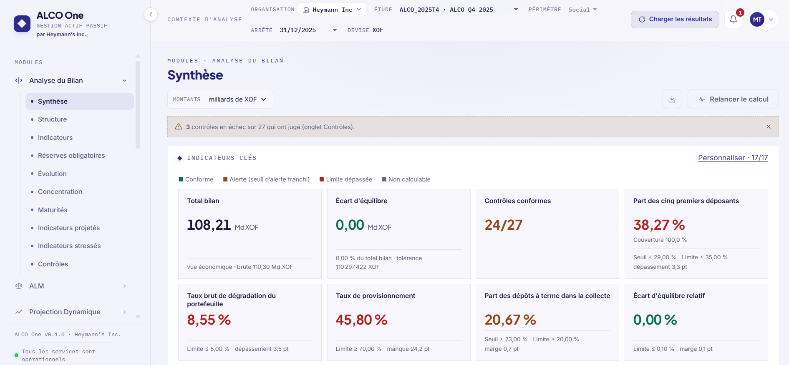
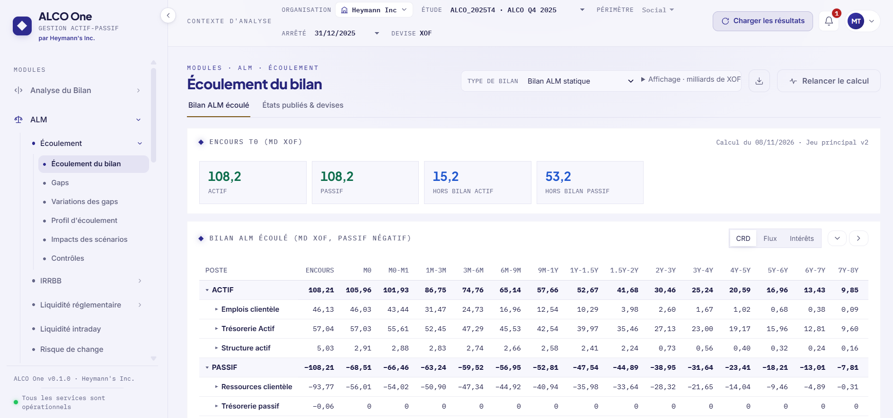
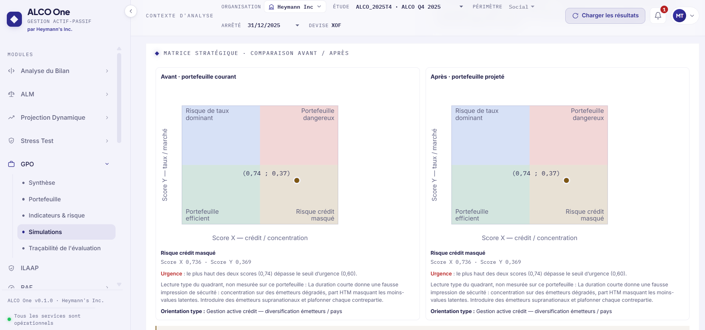

Gestion actif-passif · Banques UMOA et CEMAC
Du classeur au dossier du comité, sur un seul arrêté
ALCO One réunit la gestion actif-passif, les risques, le portefeuille obligataire et le reporting réglementaire de votre banque. Chaque chiffre dit d’où il vient.
Pourquoi changer
Ce qui change dès votre prochain comité
Des fichiers par service, des versions qui circulent, des écarts à réconcilier.
Un classeur contrôlé, publié une fois, que lisent tous les modules.
Des formules à reprendre à chaque arrêté, et une seule personne qui les maîtrise.
Des moteurs versionnés, lancés en un geste, suivis étape par étape.
Un écart constaté le jour du comité, une cause à chercher après.
Une décomposition effet par effet, qui reboucle exactement sur l’écart.
Une piste d’audit à reconstituer à la main, pièce par pièce.
L’empreinte de chaque fichier, la trace de chaque calcul, la provenance de chaque chiffre.
Un document assemblé par copier-coller, sans version ni circuit.
Un dossier produit, versionné, revu puis validé selon un circuit tracé.
La plateforme
Treize modules, qui lisent tous le même arrêté
Reporting et dossier du comité
Pilotage du bilan
Gestion des risques
Portefeuille obligataire
L’application
Des écrans conçus pour préparer le comité



Pilotage du bilan · 6 modules
Gestion des risques · 4 modules
Portefeuille obligataire · 1 module
Décidez d’un achat en voyant son effet
- Inventaire, échéancier, concentration
- Duration, DV01 et VaR à 99 %
- Stress et traçabilité de chaque évaluation
Reporting · 2 modules
Du graphique d’un écran aux états remis au superviseur
- Depuis chaque écran
Exporter ce que l’écran montre.
Image, CSV - Rapport standard
Les analyses d’un module, aux chiffres exacts de l’écran.
Excel, PDF, PowerPoint - Mes rapports
Vos analyses à composer, avec vos titres et vos commentaires.
Excel, PDF, PowerPoint - Rapport final ALCO
Le dossier du comité, versionné, revu puis validé.
PDF, Excel, PowerPoint - États réglementaires
Les états de votre zone, avec leur circuit de remise.
Format de remise
| Référentiel | UMOA | CEMAC |
|---|---|---|
| Pays | Bénin, Burkina Faso, Côte d’Ivoire, Guinée-Bissau, Mali, Niger, Sénégal, Togo | Cameroun, République centrafricaine, Congo, Gabon, Guinée équatoriale, Tchad |
| Supervision | BCEAO, Commission bancaire de l’UMOA | BEAC, COBAC |
| États remis | DEC 2062 et DEC 2063, déclaration FODEP | États CERBER |
| Liquidité | Coefficient de liquidité, LCR, NSFR | Rapport de liquidité, coefficient de transformation |
Confiance
Une plateforme sous contrôle, du contrat au premier comité
Sur le serveur de l’établissement, y compris sans accès Internet, ou hébergé par l’éditeur.
Trois lignes de défense, des rôles personnalisables et des cumuls interdits.
Second facteur imposable, sessions révocables, TLS 1.2 et 1.3.
L’empreinte de chaque fichier et l’origine de chaque résultat.
Sauvegarde préalable obligatoire et journal des versions par module.
Un centre d’aide ouvert depuis l’application, et une documentation sur l’instance.
- Licence
Le service s’ouvre, ou le serveur s’installe avec votre équipe.
- Membres
Chaque membre reçoit ses rôles.
- Modèle
Le classeur de l’arrêté se remplit depuis vos extractions.
- Arrêté
Le premier lot se publie, les conventions se règlent.
- Calculs
Les calculs tournent et se rapprochent de vos chiffres.
- Comité
Le dossier se produit, puis suit son circuit.
Votre prochaine étape
Voyez ALCO One sur un cas proche de votre établissement
- Les modules que vous avez choisis, et eux seuls
- Le référentiel de votre zone, UMOA ou CEMAC
- Le chemin complet, du classeur au dossier du comité
- Nos références restent confidentielles : parlons-en de vive voix
Vous préférez écrire directement ?